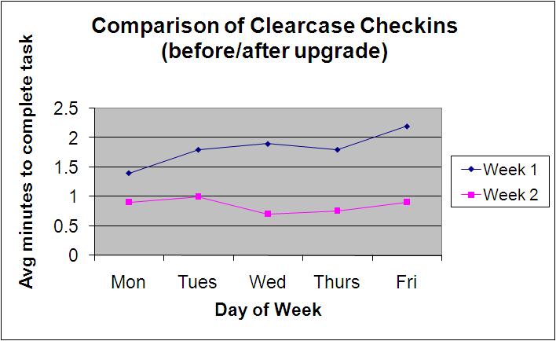

This section describes various reports that can be produced from the data collected by Lopb. At this time, Lopb does not have any built-in reporting functionality. The data is exported from Lopb as CSV files, and then processed using a spreadsheet tool like MS-Excel in order to produce these reports.
Let us assume that Lopb was used to collect data about how long it took to check-in files on average for a given developer over the course of a week. Then, after an upgrade to the source code repository server, data was collected again over the course of a second week. Finally, by plotting the average time it took to check in a file for each of the week, the following report is produced.
